Planeta Tierra
Nuestra casa vista como un planeta más: los cuatro grandes procesos geológicos, la historia de las placas tectónicas, cómo la sismología radiografía el interior, de dónde sale el calor interno — diferenciación, acreción, radiactividad y mareas — y por qué los planetas se enfrían al ritmo de su radio.
La Tierra es el planeta que mejor conocemos, y por eso es el laboratorio de calibración de toda la ciencia planetaria: lo que aprendamos aquí — tectónica, sismología, calor interno, mareas — será la vara para medir a Mercurio, Venus o Marte en las clases siguientes. La clase cuenta dos historias entrelazadas. La primera es detectivesca: cómo una idea ridiculizada durante 40 años (los continentes se mueven) terminó demostrada con magnetismo fósil y mapas del fondo marino. La segunda es termodinámica: un planeta es, en el fondo, una máquina térmica que recibió energía al formarse, la sigue generando por radiactividad y mareas, y la pierde inevitablemente por radiación — a un ritmo que depende de su tamaño.
La Tierra como planeta: agua y 4 procesos geológicos
El «planeta azul» es, en volumen, una bola de roca casi seca.
Esta clase abre una trilogía: hoy la Tierra como planeta, la próxima un paseo geológico por las superficies del Sistema Solar, y la última las atmósferas. El punto de partida son los cuatro grandes procesos geológicos que esculpen cualquier superficie planetaria: tectonismo, volcanismo, cráteres (impactos) y erosión (fluvial, pluvial, eólica…). Este catálogo será la lista de verificación con la que examinaremos a los demás planetas.
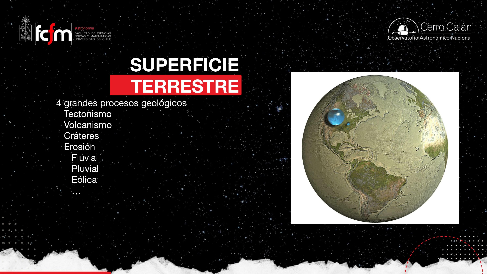
El agua es una capa delgadísima comparada con el volumen del planeta — y sin embargo es vital para el fenómeno vida y, como veremos, hasta para decidir qué placa tectónica se hunde bajo cuál. Pequeña en masa, gigante en consecuencias.
Ojo con la taxonomía: los terremotos no son un proceso geológico en sí mismos, sino un producto del tectonismo y el volcanismo (incluso un impacto cercano produce un sismo). Y volcanismo va separado de tectonismo justamente porque hay volcanes sin borde de placa, como Hawái — lo veremos con los hotspots.
Un planeta dinámico: terremotos y placas
Los epicentros dibujan solos el mapa de las placas tectónicas.
La parte sólida de la Tierra no es estática — en Chile lo vivimos regularmente. Si se grafican los terremotos recientes sobre el mapa, los epicentros no caen al azar: se alinean en franjas delgadas que delimitan las placas tectónicas. El «anillo de fuego» del Pacífico salta a la vista.
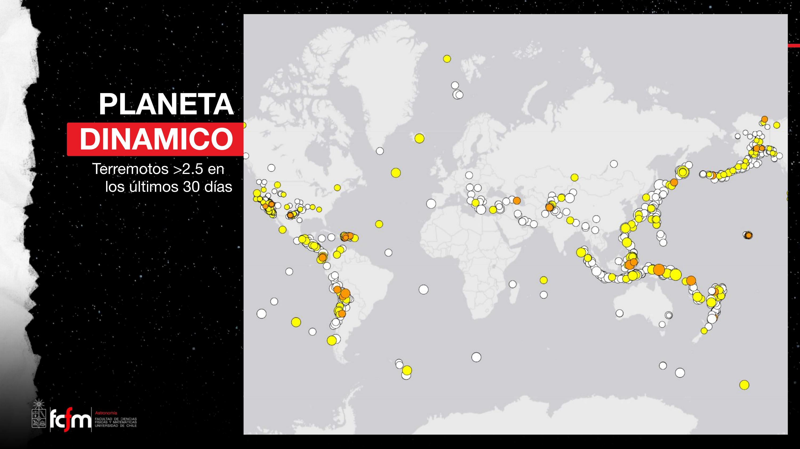
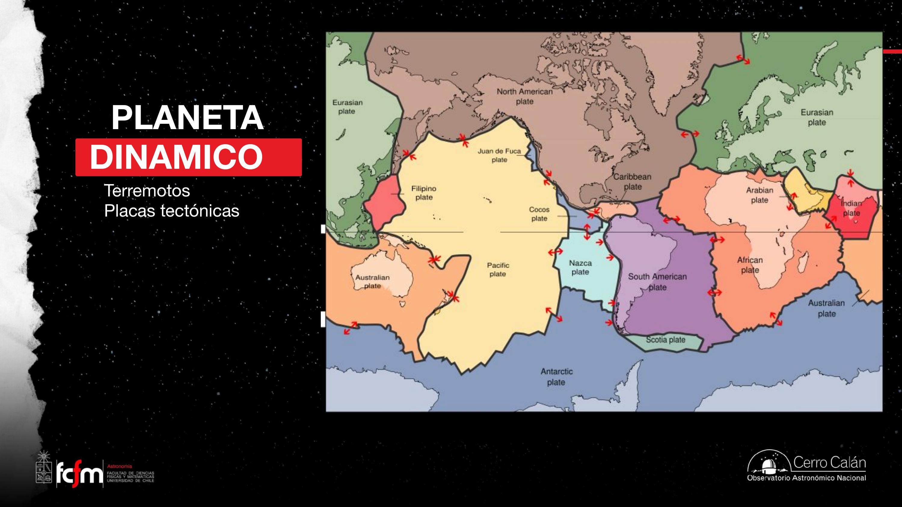
Localizar un epicentro es un problema de multilateración, el mismo principio del GPS: varias estaciones miden tiempos de llegada de la onda y la diferencia entre ellos fija la posición de la fuente. El «scatter» de los mapas antiguos era ruido de medición temporal; mejores relojes y más estaciones → líneas finas. Es un caso clásico de cómo la precisión instrumental transforma un dato borroso en una estructura nítida.
De Ortelius a Wegener: una idea ridiculizada
Antes de 1912 la Tierra era «estática». Y hasta 1950 nadie le creyó a Wegener.
La idea de que los continentes encajan como un rompecabezas es antigua: Abraham Ortelius la postuló en 1596 (Renacimiento), sugiriendo que América y África fueron «separadas violentamente por terremotos e inundaciones» — sin mecanismo, sin más evidencia que el calce visual, en una época en que el mito de la Atlántida aún circulaba como explicación de cataclismos.
En 1912, Alfred Wegener retomó la idea con evidencia nueva: fósiles de animales y plantas idénticos a ambos lados del océano, imposibles de explicar si los continentes siempre estuvieron separados. Pero seguía sin proponer un mecanismo físico que moviera continentes, y fue ridiculizado por los geólogos durante décadas — una batalla comparable, cuenta el profesor, a la del heliocentrismo contra el geocentrismo.
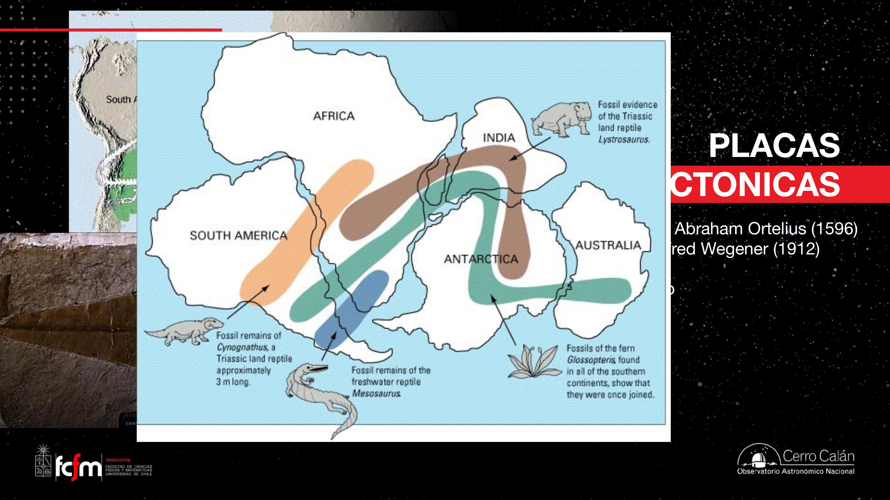
Wegener tenía correlación sin modelo causal: datos consistentes con la hipótesis, pero ningún mecanismo plausible. La comunidad científica (con razón metodológica, aunque resultado injusto) exigía el mecanismo. La lección: una hipótesis correcta puede quedar bloqueada décadas hasta que la instrumentación alcance para producir la evidencia decisiva.
1950: la tecnología que zanjó el debate
Sismología de posguerra, submarinos y el descubrimiento de la dorsal.
Hubo que esperar hasta los años 1950 — posguerra, Guerra Fría — para que la tecnología produjera las evidencias. Y con motivaciones nada geológicas: la sismología de precisión se desarrolló para detectar pruebas nucleares (un bombazo se mide sísmicamente a distancia), y los submarinos necesitaban mapas del fondo oceánico, que hasta entonces era un «azul liso» en las cartas.
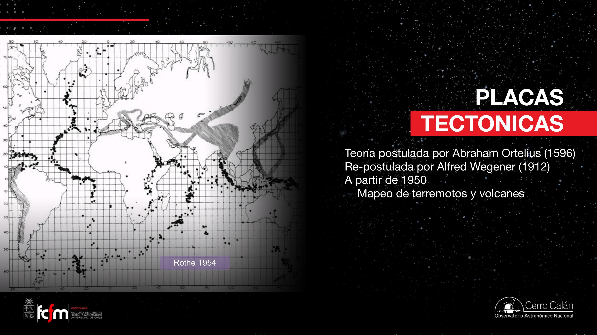
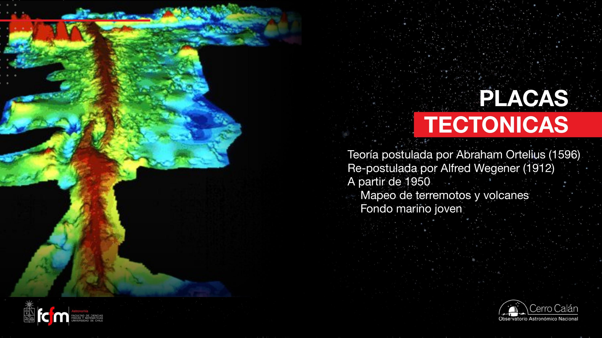
Las piezas que entre 1950 y 1960 cerraron el caso fueron cuatro, y las veremos una a una: el mapeo de terremotos y volcanes, el fondo marino joven, el campo magnético invertible grabado en la roca, y finalmente el desarrollo de la teoría de subducción.
El campo magnético invertible: la cinta grabada del fondo marino
La roca volcánica es una memoria magnética no volátil.
Temperatura de Curie: cómo una roca «graba» el campo
Átomos y moléculas tienen una dirección magnética privilegiada (el espín, el dipolo). Mientras el material está caliente y libre — magma sobre la temperatura de Curie — esos dipolos pueden rotar y se alinean con el campo magnético terrestre, como brújulas microscópicas. Al enfriarse bajo la temperatura de Curie (cercana pero no igual a la de solidificación), los minerales magnéticos congelan esa orientación: la roca queda grabada con la dirección del campo que había cuando nació.
Es literalmente el principio de la grabación magnética: cinta, disco duro. Escribir = alinear dominios con un campo mientras el material «puede moverse»; leer = medir la orientación remanente años después. El fondo marino es una cinta que la dorsal va escribiendo a centímetros por año, y que conserva el registro por cientos de millones de años. Un material no magnético equivale a dominios desordenados: magnetización neta cero.
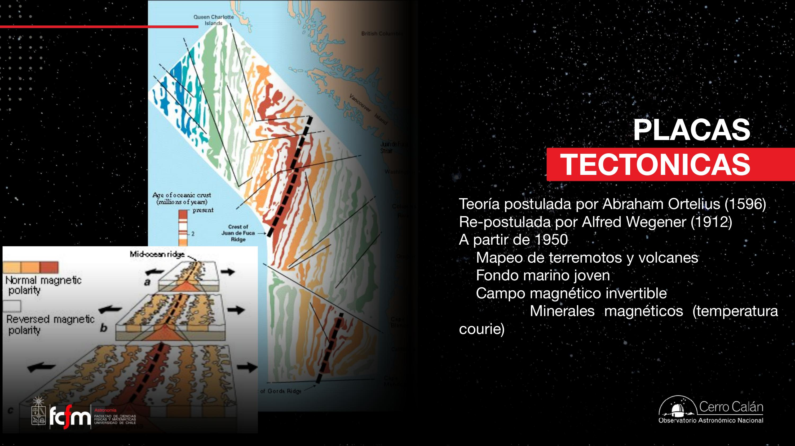
La sorpresa histórica: al muestrear el fondo, algunas rocas apuntaban al sur. Tras descartar errores de muestreo (la primera reacción fue culpar al que tomó la muestra), quedó claro que el campo magnético terrestre se ha invertido muchas veces: el norte magnético estuvo en el sur geográfico. Las bandas no son equiespaciadas — el proceso es caótico — pero sí simétricas respecto a cada dorsal, y las mismas secuencias aparecen en dorsales de océanos distintos.
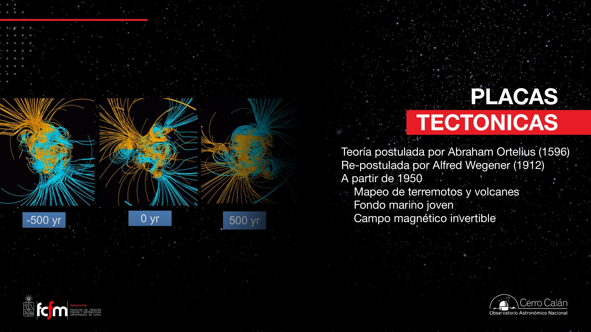
Las inversiones no están asociadas a extinciones en el registro fósil. Eso sí: ninguna especie previa dependía de satélites y navegación magnética como nosotros. Además, el polo norte magnético se mueve (las brújulas finas traían tablas de corrección por fecha) y no coincide exactamente con el geográfico. Predecir una inversión antes de que empiece: hoy imposible, es «más difícil que predecir un terremoto».
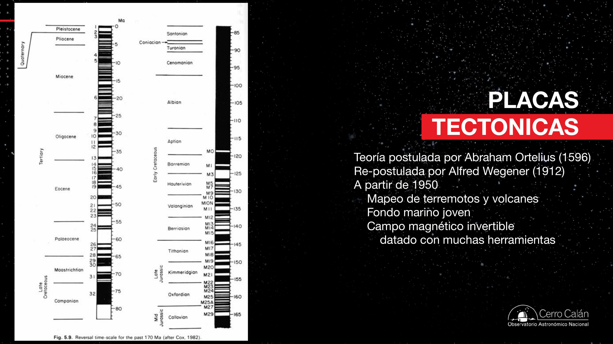
De las bandas a las películas de continentes
Con el calendario magnético se construye el mapa de edad del fondo oceánico: joven junto a las dorsales, viejo lejos de ellas. Las líneas de igual edad son isócronas. Y aquí viene lo elegante: quitando isócronas una a una (la de 0 Ma, la de 10, la de 20…) se «rebobina» el movimiento de los continentes. Las animaciones de continentes derivando no son simulaciones especulativas: son datos deshechos hacia atrás, nítidos al menos hasta Pangea, hace unos 200 millones de años (más atrás la pista se borra, porque el fondo antiguo ya fue subducido).
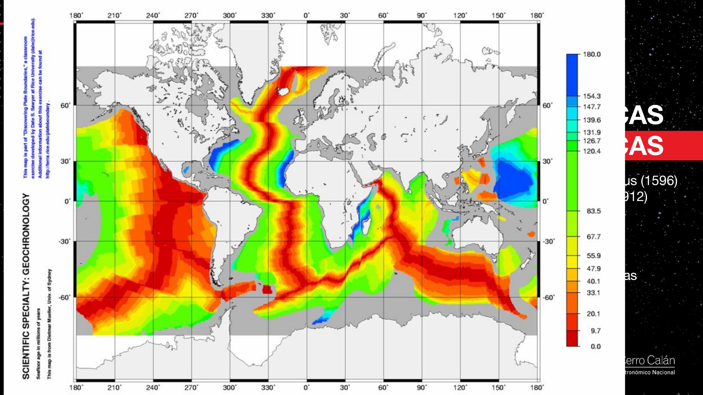
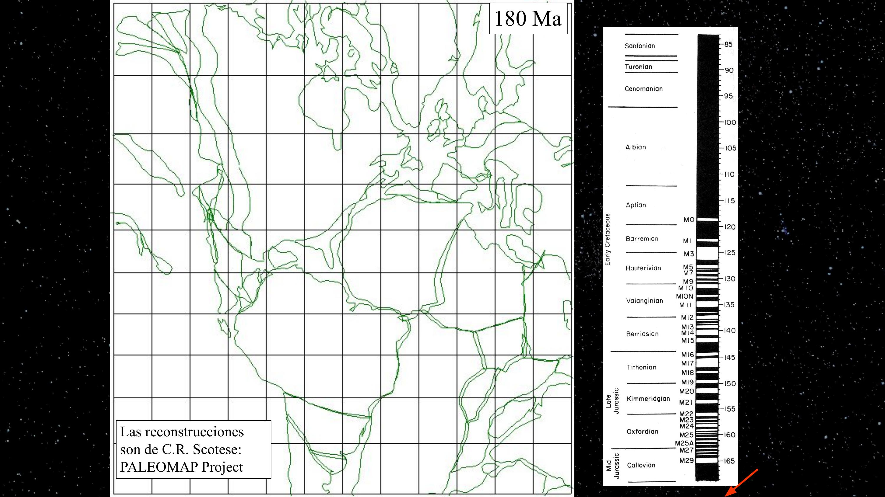
Subducción, litósfera y astenósfera
¿A dónde va la superficie antigua? Hacia abajo. Y por qué gana siempre la placa oceánica.
Si en las dorsales se crea superficie nueva y el planeta no crece, la superficie vieja tiene que destruirse en otra parte. Esa es la teoría de subducción, establecida entre los años 50 y 60: cuando dos placas chocan, una se hunde bajo la otra. La fricción y el arrugamiento producen volcanes, cordilleras y terremotos — exactamente lo que vemos en Chile.
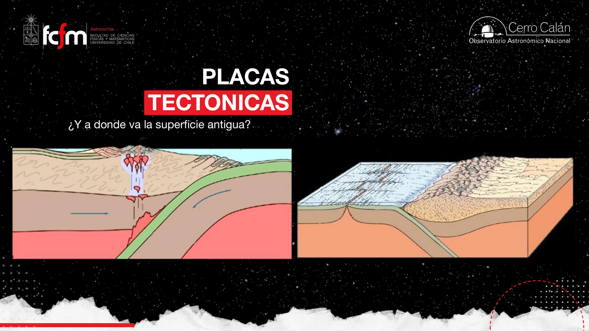
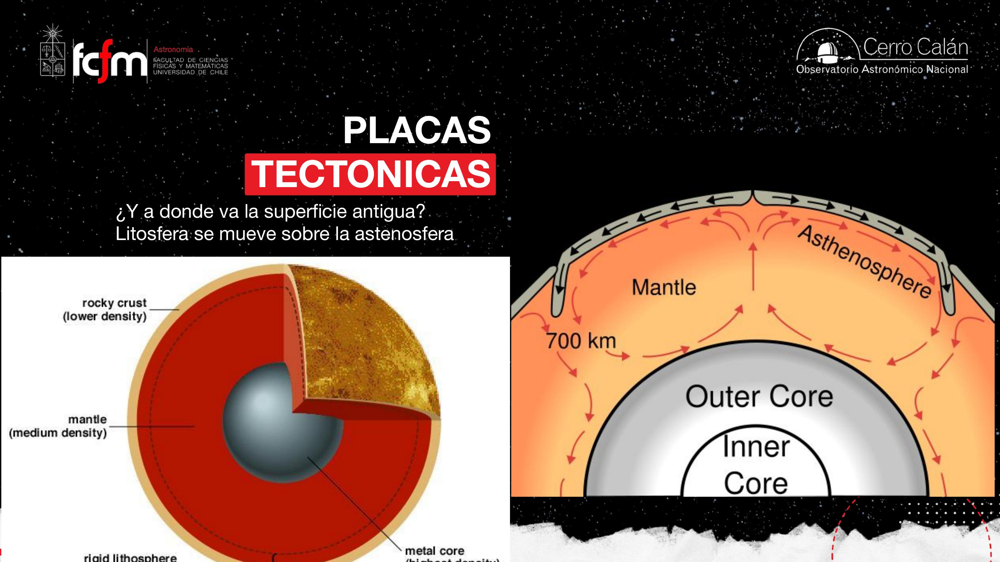
Corteza / manto / núcleo es una división por composición (qué material hay en cada capa). Litósfera / astenósfera es una división por dinámica (qué se comporta rígido y qué fluye). No coinciden: la litósfera incluye la corteza y parte del manto superior. En ingeniería diríamos: una clasificación por material, otra por comportamiento reológico.
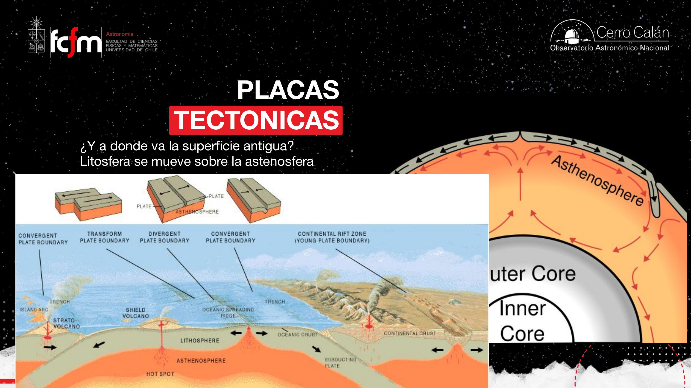
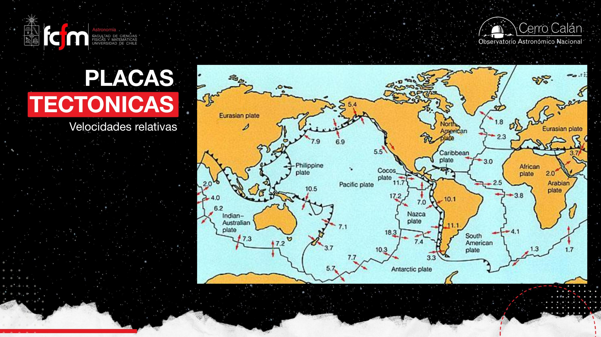
Consecuencias que se ven en el mapa
- Andes vs. Apalaches: los Andes son jóvenes y puntiagudos (Nazca empuja hoy); los Apalaches son las «lomitas» erosionadas de una cordillera que fue andina, del antiguo choque América–Europa. Mientras más reciente el relieve, más agudo; la erosión lija.
- Chile no tiene roca antigua: aquí la superficie «está naciendo» todo el rato. Rocas de ~4000 millones de años se encuentran en interiores estables como Brasil o Australia.
- Hotspots: volcanes sin borde de placa (Hawái, Isla de Pascua), alimentados por plumas de calor que suben casi directo del núcleo. La placa se mueve sobre el punto caliente fijo → cadena de islas alineadas, activas solo en el extremo (la Isla Grande de Hawái); las viejas se erosionan hasta casi desaparecer. Isla de Pascua muestra además que los puntos calientes pueden apagarse.
Radiografiar el interior: densidad y gravedad
¿Cómo sabemos que hay dos núcleos si recién en 1950 confirmamos las placas?
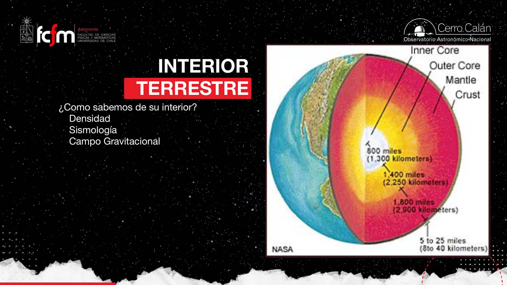
Densidad media vs. densidad superficial
La comparación más simple: la Luna y Mercurio tienen el mismo tipo de roca en superficie, pero la densidad media de Mercurio es muchísimo mayor. Conclusión inmediata: Mercurio esconde un interior más masivo — un gran núcleo metálico — que la Luna no tiene. Para la densidad media necesito volumen (geometría: medir bien tamaños y distancias) y masa.
¿Y cómo se pesa un planeta? No hay balanza posible: se usa la dinámica. La tercera ley de Kepler completa relaciona el período y el tamaño de una órbita con la masa central:
Toda medición de masa remite a un estándar: el kilogramo patrón de París, protegido bajo campanas porque el polvo lo engorda y limpiarlo lo adelgaza. Hoy el kilogramo ya no es ese cilindro: se redefine con constantes atómicas, «unidades que no cambian». Buen recordatorio de que hasta la astrofísica cuelga de la metrología.
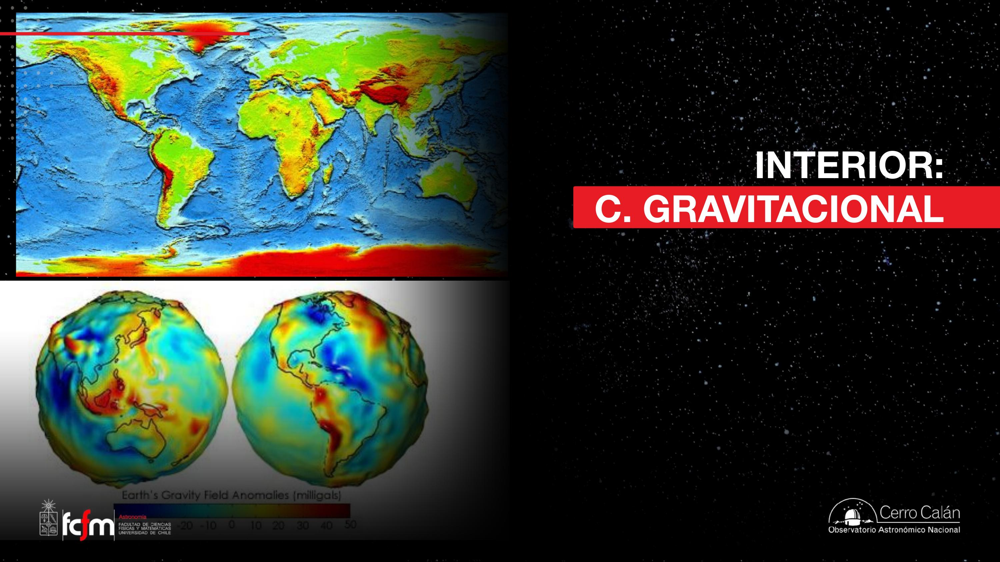
Sismología: ondas P, ondas S y el núcleo líquido
La gran herramienta. Cada terremoto es un «ping» que atraviesa el planeta.
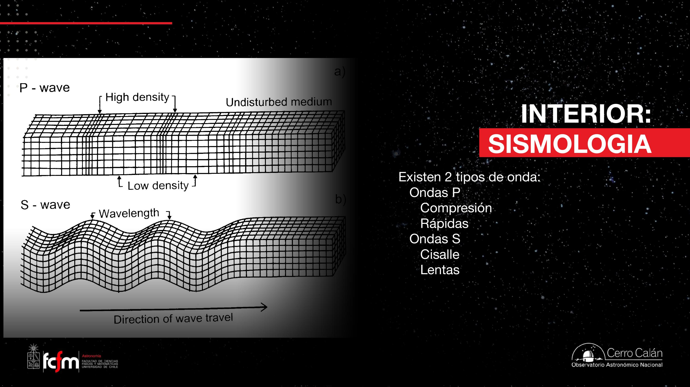
Todo material se resiste a la compresión: gases, líquidos y sólidos empujan de vuelta → las ondas P viajan por todo. Pero la cizalla exige resistencia al deslizamiento: si estiro un gas o un líquido, las moléculas simplemente se van, no hay fuerza restauradora transversal. Los fluidos no transmiten ondas S. Ese detalle convierte a las ondas S en un detector de líquidos a 3000 km de profundidad.
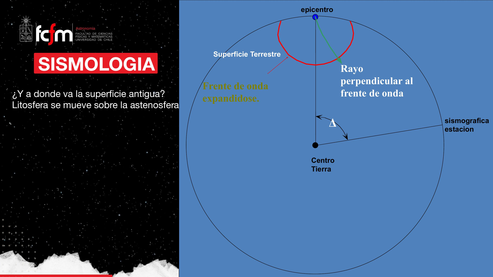
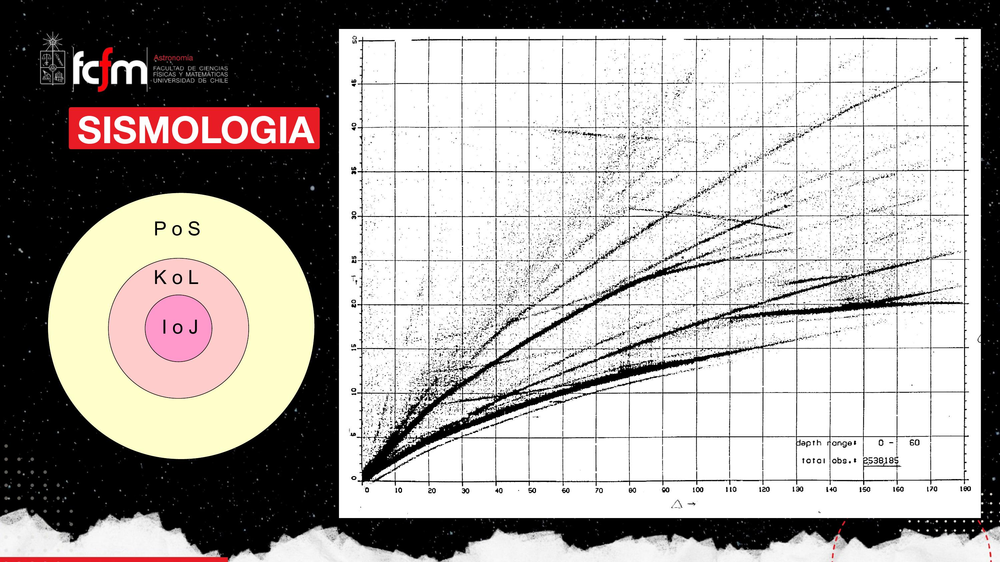
En cada interfaz entre capas la onda se refleja y se transmite (como en una guía de ondas o una línea de transmisión con cambio de impedancia), e incluso puede convertirse de P a S y viceversa. El primer modelo con solo manto + núcleo no ajustaba los datos: hizo falta un segundo núcleo. Y el resultado más famoso es un perro que no ladró:
La onda L no aparece jamás, en ningún terremoto, en ninguna estación: no existe cizalla atravesando el núcleo externo ⇒ el núcleo externo es líquido. Esa enorme masa de «roca líquida» convectando es justo lo que genera y enreda el campo magnético — y lo que de vez en cuando lo invierte. La onda J (cizalla en el núcleo interno, que es sólido) era esperablemente difícil de ver: recién se anunció su detección alrededor de 2010 y algo.
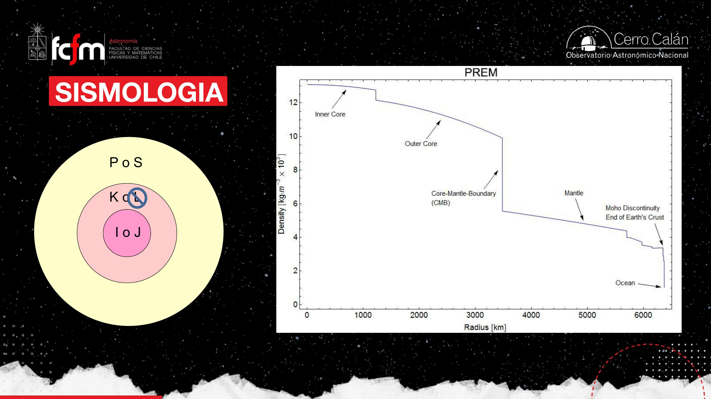
PREM es un problema de inversión tomográfica: de los tiempos de viaje (integrales de camino sobre un campo de velocidades desconocido) se reconstruye el perfil interior. Es la misma matemática que una tomografía médica, con terremotos como fuentes no controladas y sismógrafos como detectores. Con suficientes datos hasta se abandona la simetría esférica y se mapean irregularidades 3D — como las zonas donde el núcleo externo «sube» y alimenta hotspots.
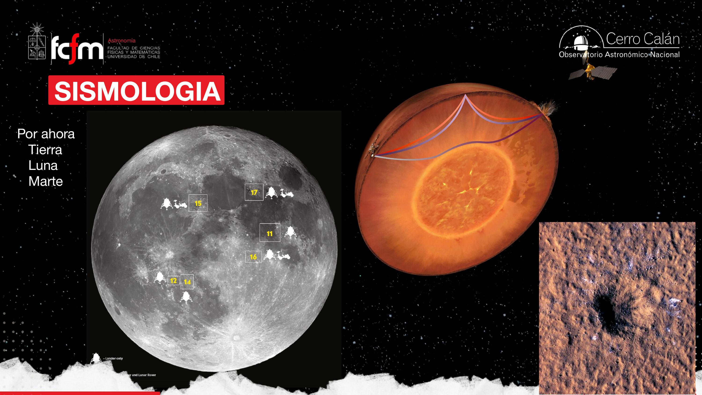
Calor interior: las cuatro fuentes
Un ejercicio de clase: proponer fuentes de energía y descartar las que no aportan.
¿De dónde sale el calor que mantiene líquido el núcleo externo? En clase se armó la lista entre todos y luego se fue podando. Sobrevivieron cuatro fuentes:
- Diferenciación: como agua y aceite, el material denso se hunde y el liviano flota. Ese reacomodo libera energía potencial gravitatoria que se deposita abajo, como calor.
- Acreción (impactos): el planeta se formó chocando cuerpos; toda esa energía cinética terminó como calor. Hoy sigue cayendo «uno que otro».
- Radiactividad (fisión): átomos inestables repartidos por el planeta decaen y liberan calor, cada uno a su ritmo (el carbono-14 en siglos; otros en miles de millones de años). No hace falta que estén concentrados — eso solo pasa en una bomba, que es material radiactivo purificado. La fusión requiere ~10 millones de K: existe en estrellas, no en planetas.
- Mareas: la deformación cíclica por la fuerza de marea disipa energía por fricción (sección siguiente).
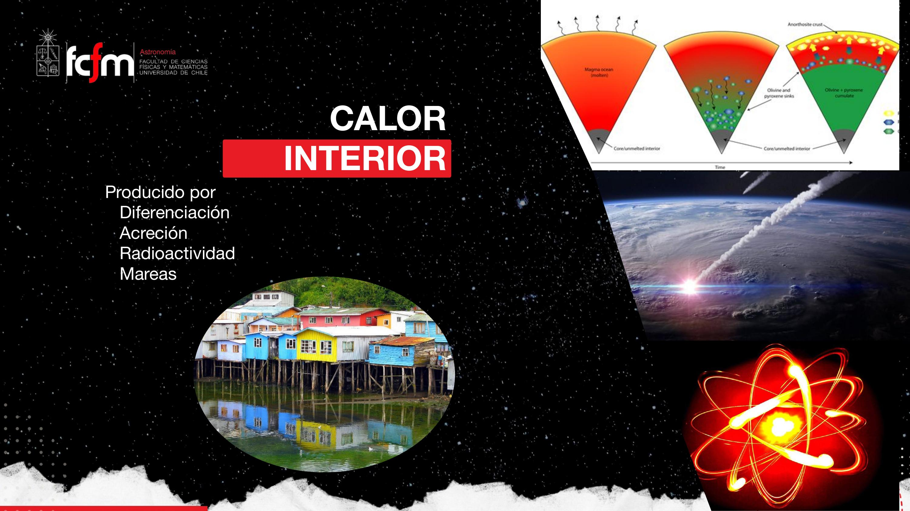
Compresión gravitatoria: requiere cambio de volumen; pudo aportar en el pasado, hoy la Tierra no se está contrayendo. Reacciones químicas: liberan energía que antes alguien guardó en las moléculas (fotosíntesis → leña, algas → petróleo); su aporte al interior es despreciable. Radiación solar: calienta la superficie, no el núcleo — «pamplinas» para el calor interno. Fusión nuclear: no ocurre en planetas.
Si intercambio una parcela densa de arriba con una liviana de abajo (mismo volumen), la que baja libera más energía potencial que la que consume la que sube. El balance neto es transporte de energía hacia abajo en cada reacomodo. En un planeta joven, fundido, este «ordenamiento por densidad» — hierro al centro, silicatos afuera — fue una fuente de calor enorme, y de paso explica la estructura en capas por composición.
El estado térmico actual es una pelea entre fuentes y pérdidas: la radiactividad sigue activa, la acreción es esporádica, la diferenciación casi terminó — y en la Tierra hoy está ganando el enfriamiento.
Mareas: fuerza diferencial, torque y órbitas síncronas
La gravedad decae con la distancia; esa diferencia estira los cuerpos y disipa calor.
La fuerza de gravedad es : el lado del planeta que mira a la Luna siente más atracción que el centro, y el lado opuesto siente menos. En el sistema de referencia del planeta, el resultado neto es un estiramiento a lo largo del eje que apunta a la Luna: dos bulbos, uno de cada lado — por eso hay dos mareas altas al día, no una.
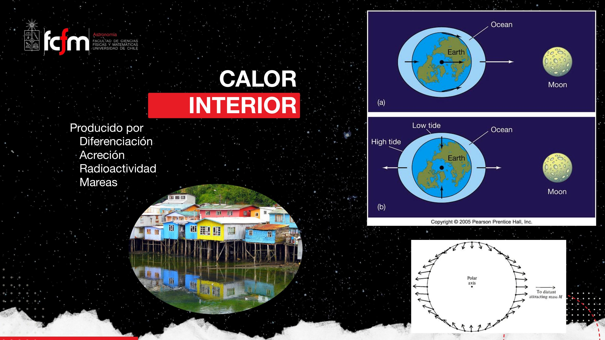
El torque del bulbo: frenar días y alejar lunas
La Tierra rota más rápido (24 h) de lo que la Luna traslada (28 días), así que el bulbo se «adelanta» y la gravedad lunar tira de él generando un torque constante. Consecuencias simétricas: el planeta que rota más rápido que la traslación de su satélite se frena (pierde momento angular) y el satélite gana momento angular: su órbita se expande — la Luna se aleja. Si la traslación fuera más rápida que la rotación, todo al revés: la órbita decae y el planeta se acelera.
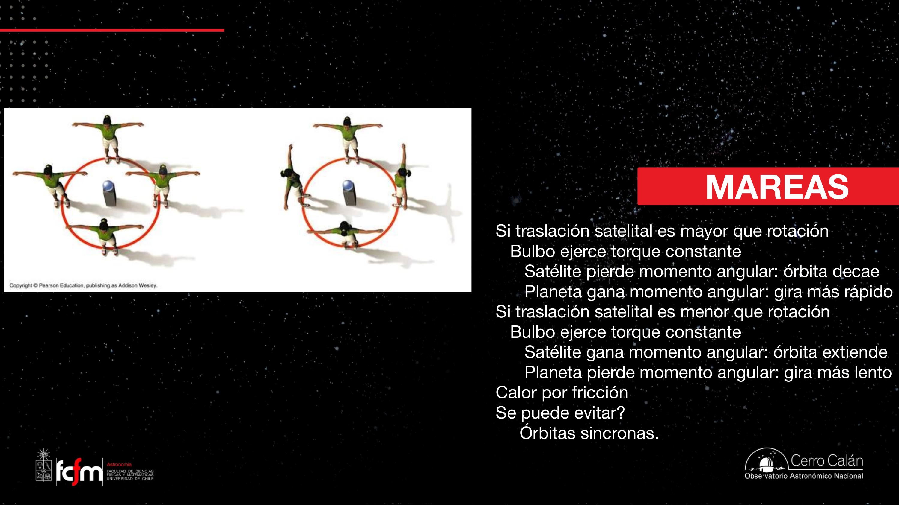
La marea quiere que el día terrestre dure 28 días (sincronizado con la Luna)… pero no alcanzará: la Luna se habrá alejado antes. Y como la Luna ya está sincronizada, su «Everest lunar» no sube y baja: la Luna casi no disipa calor de marea hoy. En la Tierra, en cambio, cada punto pasa por el bulbo dos veces al día: compresión y descompresión continua → fricción → calor interno.
Enfriamiento: la tetera planetaria
Solo hay una forma de perder energía en el vacío: fotones. Y el tamaño manda.
Contra las cuatro fuentes pelea un único sumidero. Rodeado de vacío, un planeta solo puede deshacerse de energía radiándola: fotones. (Cada satélite que lanzamos se lleva un poquito de energía, pero es anecdótico.) El argumento de escala de la clase es de los que un ingeniero debe amar:
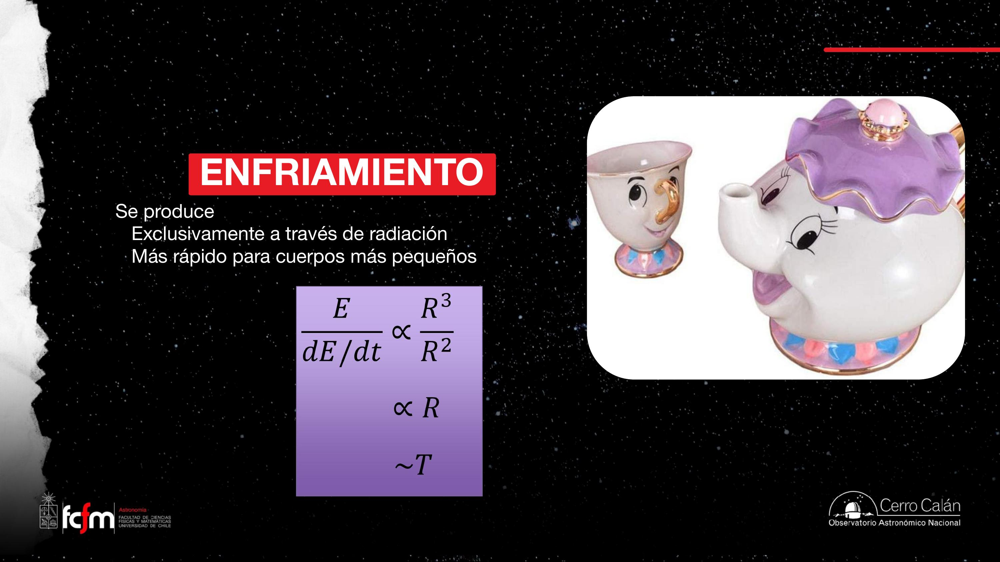
Es el mismo razonamiento que una constante de tiempo térmica (capacidad térmica sobre conductancia al ambiente) en un circuito RC térmico, y el mismo argumento área/volumen que explica por qué los chips pequeños disipan bien y los datacenters necesitan refrigeración, o por qué los animales pequeños pierden calor más rápido. Análisis dimensional puro: sin resolver ninguna ecuación diferencial ya sabemos quién se enfría primero.
Este balance — fuentes de calor vs. enfriamiento — es la clave de la próxima clase: veremos planetas que ya se enfriaron (interiores muertos, sin tectonismo, superficies fósiles llenas de cráteres) y planetas que aún no, y cómo eso se lee directamente en sus superficies.
Esta sesión fue compartida con el curso de Instrumentación y Métodos de Observación: tras el bloque de planetas hubo presentaciones de estudiantes y una clase corta de observación (coordenadas celestes: ascensión recta y declinación, eclíptica, monturas ecuatoriales vs. altazimutales, tiempo sideral local). Ese material pertenece al curso de Observación y no se desarrolla en estos apuntes, que cubren el contenido de Astrofísica de Planetas según las diapositivas «Planeta Tierra».
Conceptos clave
Tabla de repaso rápido.
| Concepto | Qué es / valor | Por qué importa |
|---|---|---|
| 4 procesos geológicos | Tectonismo, volcanismo, cráteres, erosión | Checklist para leer cualquier superficie planetaria; terremotos son producto, no proceso |
| Placas tectónicas | Ortelius 1596 → Wegener 1912 → evidencias 1950s | Idea correcta bloqueada 40 años por falta de mecanismo e instrumentos |
| Temperatura de Curie | Umbral bajo el cual el mineral congela su magnetización | La roca de la dorsal «graba» el campo magnético del momento en que se enfrió |
| Inversiones magnéticas | Bandas simétricas a la dorsal; transición ~1000 años | Prueban expansión del fondo y campo caótico; datadas → isócronas |
| Isócronas | Líneas de igual edad del fondo oceánico | Rebobinan el movimiento continental con datos hasta Pangea (~200 Ma) |
| Subducción | La placa más densa (oceánica) se hunde bajo la otra | Destruye superficie vieja; genera volcanes, cordilleras y terremotos |
| Litósfera / astenósfera | División dinámica (rígido / convecta), ≠ corteza-manto-núcleo (composición) | Las placas = litósfera arrastrada por convección sólida del manto |
| Hotspot | Pluma de calor casi directa del núcleo (Hawái, Pascua) | Volcanismo sin borde de placa; cadenas de islas = placa móvil sobre punto fijo |
| 3.ª ley de Kepler | Pesar cuerpos con el movimiento de sus satélites (masa → densidad media) | |
| Ondas P / S | Compresión (rápida) / cizalla (lenta) | Los fluidos no transmiten S: la ausencia de onda L ⇒ núcleo externo líquido |
| PREM | Perfil densidad–radio invertido de tiempos de viaje | Discontinuidades = cambios de material (manto / núcleos) |
| Fuentes de calor interno | Diferenciación, acreción, radiactividad (fisión), mareas | Descartadas: compresión actual, química, luz solar, fusión |
| Fuerza de marea | Diferencial de gravedad: | Dos bulbos; deforma roca (~50 cm) y océano (~90 cm); disipa calor por fricción |
| Órbita síncrona | Rotación = traslación; torque de marea se anula | La Luna ya muestra una sola cara (y casi no disipa calor de marea) |
| Enfriamiento ∝ R | , solo por radiación | Cuerpos chicos mueren térmicamente antes; clave para comparar planetas |
Exámenes de práctica
10 exámenes de 5 preguntas (3 de alternativas autocorregibles + 2 de respuesta escrita).
- Examen 01Procesos geológicos y agua
- Examen 02Ortelius y Wegener
- Examen 03Evidencias de 1950
- Examen 04Magnetismo e isócronas
- Examen 05Subducción y litósfera
- Examen 06Bordes, velocidades, hotspots
- Examen 07Densidad, masa y gravedad
- Examen 08Sismología
- Examen 09Calor interno
- Examen 10Mareas y enfriamiento